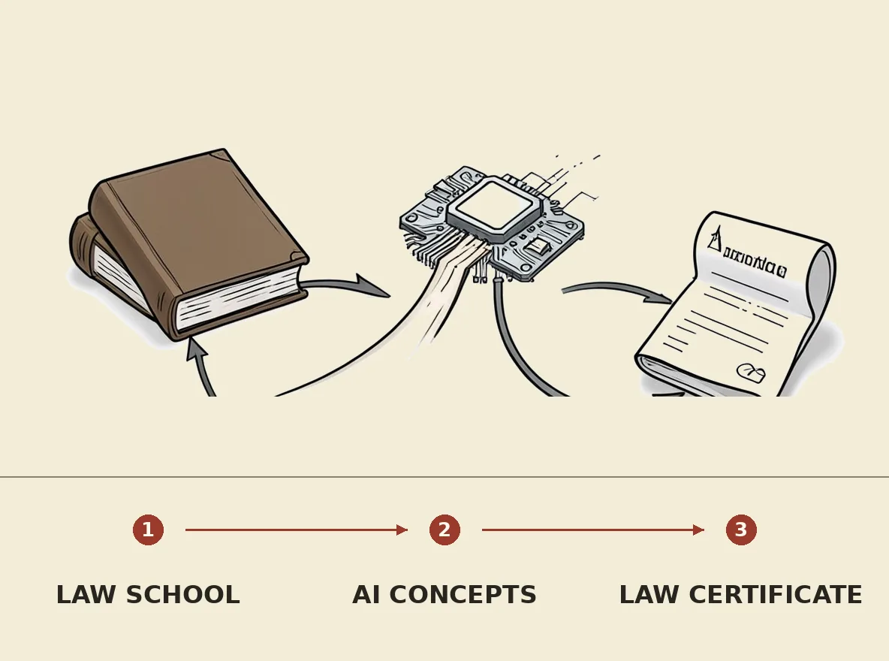

Penn Carey Law has announced a new certificate program specifically focused on the intersection of artificial intelligence and law. As only the headline-level development is known, specific curriculum details, program duration, or target audience for this offering are not available. This development highlights a growing recognition within legal education of the need to equip professionals with expertise in AI's implications for legal practice, addressing emerging challenges and opportunities in the field.